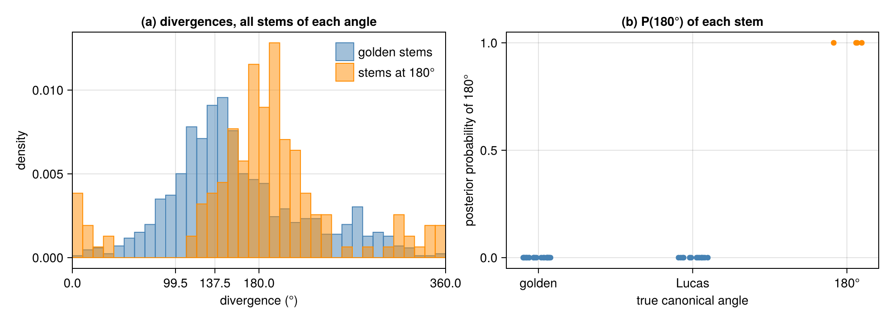

Canonical angles
By default, the divergence of each stem is the golden angle ($\approx 137.5^\circ$) or, rarely, the Lucas angle ($\approx 99.5^\circ$) (§2.1). Some data need another list or a single divergence known in advance. The prior takes a list of any length.
The prior: stick-breaking probabilities
assumption — the divergence of each stem is one of the M + 1 angles, listed from the most to the least expected. Their probabilities come from M probabilities $\alpha_j \sim \mathrm{Beta}(a_j, b_j)$ (aα, bα):
\[p_1 = \alpha_1, \qquad p_j = \alpha_j \prod_{i<j} (1 - \alpha_i), \qquad p_{M+1} = \prod_{i \le M} (1 - \alpha_i) .\]
$\alpha_j$ is the probability of angle $j$ among the stems not at the angles before it: each step breaks off one piece of what is left. Each prior is then stated one angle at a time:
angles | aα, bα | what it says |
|---|---|---|
| (golden, Lucas) | (95,), (5,) | the default: golden in about 95 % of the stems, else Lucas |
| (golden, Lucas, π) | (95, 999), (5, 1) | as the default; 180° in about 1 in 1000 of the other stems |
| (golden,) | (), () | every stem golden, no α |
An unexpected angle gets a small prior: a Beta that holds the previous α near 1. A wild-type fit is then unchanged, while a stem that clearly follows the angle is still recognised (example below). All the $\alpha_j$ are fitted.
using PhyllotaxisFold
prior = PhyllotaxisPrior(; angles = (Golden_angle, Lucas_angle, π), aα = (95, 999), bα = (5, 1))
golden_only = PhyllotaxisPrior(; angles = Golden_angle, aα = (), bα = ())With M + 1 angles, θ.α is a tuple and θ.angle_probs gives the probability of each angle; spiral_posterior returns p_angle, the posterior probability of each angle for each stem; simulate_stems takes the same angles. The cost grows linearly with the number of angles.
Noble angles
The divergences of the phyllotaxis diagram converge to noble numbers, $(a + b\,\tau^{-1})/(c + d\,\tau^{-1})$ with $\lvert ad - bc \rvert = 1$ and $\tau$ the golden mean (Douady and Couder, 1996). noble_angle(a, b, c, d) returns $2\pi$ times such a number, folded into $(0, \pi]$ ($\psi$ and $2\pi - \psi$ give the same spirals, turning the other way).
noble_angle | divergence |
|---|---|
(1, 1, 2, 3) | 151.1° |
(1, 0, 2, 1) | 137.5°, the golden angle |
(1, 0, 3, 1) | 99.5°, the Lucas angle |
(1, 0, 4, 1) | 78.0° |
(1, 0, 5, 1) | 64.1° |
prior = PhyllotaxisPrior(; angles = (Golden_angle, Lucas_angle, noble_angle(1, 0, 4, 1)), aα = (95, 99), bα = (5, 1))Example: a few stems at 180°
Simulation. Forty stems of 40 organs, each golden with probability 0.6, else Lucas or 180° (distichous) with equal probability (α = (0.6, 0.5)). The draw gave 4 stems at 180°, far more than the prior expects.
using PhyllotaxisFold, Random
angles = (Golden_angle, Lucas_angle, π)
sim = simulate_stems([-1.2, -2.5, -3.1, -4.0]; plants = 40, organs = 40, logμκ = 1.85, α = (0.6, 0.5), angles,
rng = Xoshiro(3))
prior = PhyllotaxisPrior(; angles, aα = (95, 999), bα = (5, 1))
r = fit_map(PhyllotaxisModelAD(sim.angles, prior))
post = spiral_posterior(r)
p180 = [p.p_angle[3] for p in post] # the posterior probability of 180° of each stemresult — the 4 stems at 180° are recognised despite a prior of 1 in 20,000: their posterior probability of 180° is 1.000, that of every other stem below $10^{-22}$. Forty organs carry far more evidence than the prior. The fitted probability of 180° stays small (0.08 %, r.θ.angle_probs): a Beta(999, 1) weighs as much as a thousand stems.

Figure 1. Forty simulated stems, 4 of them at 180°. (a) The divergences of the golden stems and of the stems at 180°. (b) The posterior probability of 180° of each stem, against its true angle.
What the angles can see at 180°
At 180°, site $j + 2$ sits where site $j$ sits, so an organ displaced by two sites lands on its own site: only odd displacements show. In a stem at 180°, $\eta_2$ and $\eta_4$ are informed by the other stems only, and the decoded order can be wrong by even displacements without any change of the likelihood. Other symmetric patterns (decussate pairs) have the same blind spots.